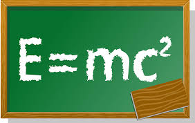

Postdoctral position at the Institut de Recherche en Astrophysique et Planétologie (IRAP), Toulouse, France. Funded by the ERC "Chemtrip".
Dec. 2019 - Dec. 2021:
Postdoctral position at the American Museum of Natural History. Funded by the Master of Art of Teaching program.
Oct. 2017 - Oct. 2019:
Postdoctral position at the Osaka University, Theoretical Astrophysics group. Funded by a long term JSPS fellowship.
Oct. 2014 - Sep. 2017 :
PhD thesis at Centre de Recherche Astrophysique de Lyon (CRAL) with Gilles Chabrier and Benoît Commerçon.
Teaching

Since Jul. 2020
Supervision of M2 student internship in astrophysics.
Since Feb. 2022
Supervision of M1 students project as a research initiation in astrophysics.
Feb. 2015, 2016, 2017 (2 weeks/yr)
Teaching and training sessions in mathematics for a competitive examination for last year high school students in economy. (Private tuition company Methodia)
2015-2017 :
Examinator for weekly oral examinations for first year mathematics students. (22h, University Claude Bernard Lyon 1)
Teaching assistant in mathematics for second year computer science students. (160h, University Claude Bernard Lyon 1)
Lecturer on fossil and renewable energy for second year science students. (12h, University Claude Bernard Lyon 1)
Outreach
May. 2025 :
Scientific consultant for the French translation of the movie of the American Museum of Natural History, "Encounters in the Milky Way".
Nov. 2023 :
Public talk for the astronomy club of Le Mans university.
Dec. 2021 :
Scientific consultant for the French translation of the movie of the American Museum of Natural History, "The Big Bang".
Sep. 2021 :
Public talk for the Mid-Hudson Astronomical Association on non-ideal MHD in star formation.
Mar. 2021 :
Chat moderator for a Youtube live session of the American Museum of Natural History -- answering questions from the chat about the universe.
May. 2020 :
Participation in an astronomy panel for high school students (1 hour via Zoom).
Feb. 2020 :
Scientific consultant for the French translation of the new planetarium show of the American Museum of Natural History, "Worlds Beyond Earth".
Jun. 2019 :
Presentation on star formation for second high school students, Takamatsu, Japan (1 hour)
Dec. 2018 :
Presentation on the life cycle of stars for second year scientific high school students, Kawanishi, Japan (1 hour)
Apr 2015-2017 :
"Astro week", Accompanying high school students to visit the planetarium, computing center and Lyon observatory, Lyon, France.
2015-2017 :
Presentation of the astrophysics department at the ENS de Lyon and astronomy-related subjects for visiting middle and high school students (∼ 10 x 90 minutes), Lyon, France
May 2016 :
Presentation of astronomy subjects for 10 years old elementary school children (90 minutes), Lyon, France
Mar 2012 :
"Nuit de l’equinoxe", Public gathering of the astronomy clubs of Lyon, representing the Ecole Centrale de Lyon, France.
Education
2014-2017 :
PhD in Astrophysics at Université Claude Bernard Lyon 1.
2013-2014 :
Master in Astronomy and Astrophysics at Observatoire de Paris.
2010-2013 :
Engineer's degree in Energy at Ecole Centrale de Lyon.
2008-2010 :
CPGE, MPSI/MP* at Chaptal school, Paris. Two years of intensive mathematics and physics to prepare competitive examinations.